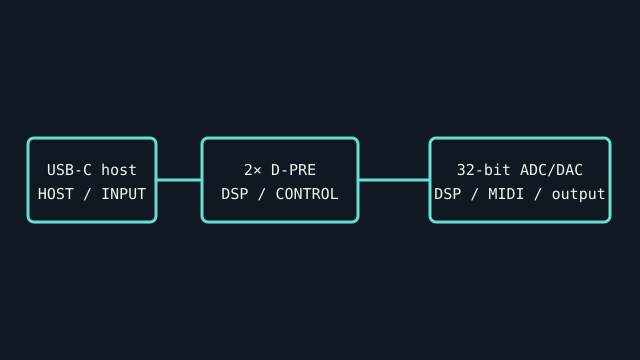

[ INDIVIDUAL COMPONENT // SOUND HARDWARE ]
Steinberg UR22C
USB-C 2-in/2-out interface with two D-PRE microphone preamps, MIDI I/O, and DSP effects/loopback functions. UR22C is a distinct generation from UR22 and UR22mkII.

IDENTIFICATION: Match the complete printed model, revision, bundled breakout, and accessory markings. Specs below describe this named model; family-level variants are not assumed interchangeable.
Specifications
| Catalog subcategory | USB audio interfaces |
|---|---|
| Product ID | Steinberg UR22C USB audio/MIDI interface |
| Bus / host | USB 3.0 Type-C device connector; compatible host/cable operation and bus power depend on host and optional power arrangements. |
| Connectors and I/O | Two XLR/TRS combo inputs with +48 V phantom power and HI-Z selection on input 2; two balanced TRS line outputs, headphone output, MIDI DIN I/O, and USB-C. |
| Chipset / conversion / protocol | 32-bit integer / up to 192 kHz; two simultaneous analog input and output channels. Yamaha D-PRE mic preamps; dspMixFx includes onboard DSP monitoring effects. |
| Drivers / operating systems | Steinberg USB driver/software on Windows; Mac support depends on package/OS version. The model supports class-compliant iOS/iPad operation with appropriate power and adapter as described in the manual. Check UR-C downloads for exact OS compatibility. |
| Variant compatibility | UR22C is USB-C and DSP/loopback-capable; do not use UR22/UR22mkII driver assumptions. USB-C connector is not evidence of USB4 bandwidth requirement; follow manual and use data-capable cables. |
Service & preservation
Keep the USB cable, power/adapter notes, and DSP preset/software versions with the interface. Test input 2 HI-Z, phantom power, loopback, MIDI I/O, and headphone output separately; protect combo jacks from side load.
Identification and compatibility checks
- Photograph the product/model label, board silkscreen/revision, connector faces, cable assemblies, and accessory part numbers before installation.
- Check electrical bus and host slot or USB/MIDI protocol support against the exact manual; connector shape alone does not establish compatibility.
- For analog I/O, confirm line/mic/instrument level, phantom-power behavior, channel map, and direction from the model-specific documentation before connecting equipment.
- When software or driver support is uncertain, preserve the last known-good installer and document tested host OS, driver version, and device identifier.
Primary manufacturer & standards sources
- Steinberg UR22C official product pageManufacturer product I/O, converter and DSP feature details.
- Steinberg UR22C Operation ManualManufacturer manual for connectors, power, compatibility, and operation.
- Steinberg official downloadsUse UR22C model-specific driver and OS release notes.
Source selection is model-specific where an original manual or vendor product/support page exists. Archived scans preserve manufacturer documentation; operating-system claims are limited to what the cited product/manual materials identify.